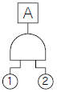
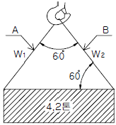
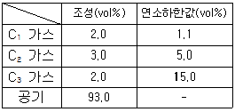
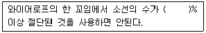

산업안전산업기사 (2015-05-31 기출문제)
1과목: 산업안전관리론
1. 다음 중 산업안전보건법령상 안전인증대상 보호구의 안전인증제품에 안전인증 표시 외에 표시하여야 할 사항과 가장 거리가 먼 것은?
- 안전인증 번호
- 형식 또는 모델명
- 제조번호 및 제조연월
- 물리적, 화학적 성능기준
(정답률: 76%)

2. 도수율이 13.0, 강도율 1.20인 사업장이 있다. 이 사업장의 환산도수율은 얼마인가? (단, 이 사업장 근로자의 평생 근로시간은 10만 시간으로 가정한다.)
- 1.3
- 10.8
- 12.0
- 92.3
(정답률: 60%)
3. 다음 중 사고예방대책 제5단계의 "시정책의 적용"에서 3E와 관계가 없는 것은?
- 교육(Education)
- 재정(Economics)
- 기술(Engineering)
- 관리(Enforcement)
(정답률: 76%)
4. 다음 중 조건반사설에 의거한 학습이론의 원리가 아닌 것은?
- 강도의 원리
- 일관성의 원리
- 계속성의 원리
- 시행착오의 원리
(정답률: 66%)
5. 어떤 상황의 판단 능력과 사실의 분석 및 문제의 해결 능력을 키우기 위하여 먼저 사례를 조사하고, 문제적 사실들과 그의 상호 관계에 대하여 검토하고, 대책을 토의하도록 하는 교육기법은 무엇인가?
- 심포지엄(symposium)
- 로울 플레잉(role playing)
- 케이스 메소드(case method)
- 패널 디스커션(panel discussion)
(정답률: 66%)
6. 다음 중 재해예방의 4원칙에 해당하지 않는 것은 ?
- 예방 가능의 원칙
- 손실 우연의 원칙
- 원인 계기의 원칙
- 선취 해결의 원칙
(정답률: 80%)
7. 다음 중 안전교육의 종류에 포함되지 않는 것은?
- 태도교육
- 지식교육
- 직무교육
- 기능교육
(정답률: 74%)
8. 다음 중 산업안전보건법령상 자율안전확인 대상에 해당하는 방호장치는?(오류 신고가 접수된 문제입니다. 반드시 정답과 해설을 확인하시기 바랍니다.)
- 압력용기 압력방출용 파열판
- 보일러 압력방출용 안전밸브
- 교류 아크용접기용 자동전격방지기
- 방폭구조(防)爆構造) 전기기계ㆍ기구 및 부품
(정답률: 67%)
9. 인간의 특성에 관한 측정검사에 대한 과학적 타당성을 갖기 위하여 반드시 구비해야 할 조건에 해당되지 않는 것은?
- 주관성
- 신뢰도
- 타당도
- 표준화
(정답률: 84%)
10. 다음 중 산업안전보건법령상 특별안전ㆍ보건교육의 대상 작업에 해당하지 않는 것은?
- 석면해체ㆍ제거작업
- 밀폐된 장소에서 하는 용접작업
- 화학설비 취급품의 검수ㆍ확인 작업
- 2m 이상의 콘크리트 인공구조물의 해체 작업
(정답률: 71%)
11. 다음 중 산업안전보건법령상 안전보건개선 계획서에 반드시 포함되어야 할 사항과 가장 거리가 먼 것은?
- 안전ㆍ보건교육
- 안전ㆍ보건관리체제
- 근로자 채용 및 배치에 관한 사항
- 산업재해예방 및 작업환경의 개선을 위하여 필요한 사항
(정답률: 83%)
12. 다음 중 인간의 행동 변화에 있어 가장 변화시키기 어려운 것은?
- 지식의 변화
- 집단의 행동 변화
- 개인의 태도 변화
- 개인의 행동 변화
(정답률: 82%)
13. 다음 중 타박, 충돌, 추락 등으로 피부 표면보다는 피하조직 등 근육부를 다친 상해를 무엇이라 하는가?
- 골절
- 자상
- 부종
- 좌상
(정답률: 76%)
14. 산업안전보건법령상 안전ㆍ보건표지에 사용하는 색채 가운데 비상구 및 피난소, 사람 또는 차량의 통행표지 등에 사용하는 색채는?
- 흰색
- 녹색
- 노란색
- 파란색
(정답률: 88%)
15. 앞에 실시한 학습의 효과는 뒤에 실시하는 새로운 학습에 직접 또는 간접으로 영향을 주는데 이러한 현상을 전이(轉移, transfer)라 한다. 다음 중 전이의 조건이 아닌 것은?
- 학습자료의 유사성 요인
- 학습 평가자의 지식 요인
- 선행학습정도의 요인
- 학습자의 태도 요인
(정답률: 62%)
16. 다음 중 매슬로우(Maslow)의 욕구 위계이론 5단계를 올바르게 나열한 것은?
- 생리적 욕구 → 안전의 욕구 → 사회적 욕구 → 존경의 욕구 → 자아 실현의 욕구
- 생리적 욕구 → 안전의 욕구 → 사회적 욕구 → 자아 실현의 욕구 → 존경의 욕구
- 안전의 욕구 → 생리적 욕구 → 사회적 욕구 → 자아 실현의 욕구 → 존경의 욕구
- 안전의 욕구 → 생리적 욕구 → 사회적 욕구 → 존경의 욕구 → 자아 실현의 욕구
(정답률: 88%)
17. 다음 중 리더십(leadership)의 특성으로 볼 수 없는 것은?
- 민주주의적 지휘 형태
- 부하와의 넓은 사회적 간격
- 밑으로부터의 동의에 의한 권한 부여
- 개인적 영향에 의한 부하와의 관계 유지
(정답률: 83%)
18. 다음 중 리스크 테이킹(risk taking)의 빈도가 가장 높은사람은?
- 안전지식이 부족한 사람
- 안전기능이 미숙한 사람
- 안전태도가 불량한 사람
- 신체적 결함이 있는 사람
(정답률: 73%)
19. 무재해운동의 추진기법 중 “지적ㆍ확인”이 불안전 행동 방지에 효과가 있는 이유와 가장 거리가 먼 것은?
- 긴장된 의식의 이완
- 대상에 대한 집중력의 향상
- 자신과 대상의 결합도 증대
- 인지(cognition) 확률의 향상
(정답률: 73%)
20. 다음 중 기업의 산업재해에 대한 과거와 현재의 안전성적을 비교, 평가한 점수로 안전관리의 수행도를 평가하는데 유용한 것은?
- safe-T-score
- 평균강도율
- 종합재해지수
- 안전활동률
(정답률: 79%)
2과목: 인간공학 및 시스템안전공학
21. 다음 중 작업장에서 구성요소를 배치하는 인간 공학적 원칙과 가장 거리가 먼 것은?
- 선입선출의 원칙
- 사용빈도의 원칙
- 중요도의 원칙
- 기능성의 원칙
(정답률: 80%)
22. 크기가 다른 복수의 조종장치를 촉감으로 구별 할 수 있도록 설계할 때 구별이 가능한 최소의 직경 차이와 최소의 두께 차이로 가장 적합한 것은?
- 직경 차이 : 0.95cm, 두께 차이 : 0.95cm
- 직경 차이 : 1.3cm, 두께 차이 : 0.95cm
- 직경 차이 : 0.95cm, 두께 차이 : 1.3cm
- 직경 차이 : 1.3cm, 두께 차이 : 1.3cm
(정답률: 62%)
23. 다음 중 시각적 표시장치에 있어 성격이 다른 것은?
- 디지털 온도계
- 자동차 속도계기판
- 교통신호등의 좌회전 신호
- 은행의 대기인원 표시등
(정답률: 73%)
24. 서서하는 작업의 작업대 높이에 대한 설명으로 틀린 것은?
- 경작업의 경우 팔꿈치 높이보다 5~10cm 낮게 한다.
- 중작업의 경우 팔꿈치 높이보다 10~20cm 낮게 한다.
- 정밀작업의 경우 팔꿈치 높이보다 약간 높게 한다.
- 부피가 큰 작업물을 취급하는 경우 최대치 설계를 기본으로 한다.
(정답률: 70%)
25. 인간공학의 주된 연구 목적과 가장 거리가 먼 것은?
- 제품품질 향상
- 작업의 안정성 향상
- 작업환경의 쾌적성 향상
- 기계조작의 능률성 향상
(정답률: 71%)
26. 동전던지기에서 앞면이 나올 확률 P(앞)=0.9 이고, 뒷면이 나올 확률 P(뒤)=0.1 일 때, 앞면과 뒷면이 나올 사건 각각의 정보량은?
- 앞면 : 0.10bit, 뒷면 : 3.32bit
- 앞면 : 0.15bit, 뒷면 : 3.32bit
- 앞면 : 0.10bit, 뒷면 : 3.52bit
- 앞면 : 0.15bit, 뒷면 : 3.52bit
(정답률: 71%)
27. 소음을 측정하는 단위는?
- 데시벨(dB)
- 지멘스(S)
- 루멘(lumen)
- 거스트(Gust)
(정답률: 90%)
28. FTA에서 사용되는 논리게이트 중 여러 개의 입력 사상이 정해진 순서에 따라 순차적으로 발생해야만 결과가 출력 되는 것은?
- 억제 게이트
- 우선적 AND 게이트
- 배타적 OR 게이트
- 조합 AND 게이트
(정답률: 69%)
29. 인체의 동작 유형 중 굽혔던 팔꿈치를 펴는 동작을 나타내는 용어는?
- 내전(adduction)
- 회내(pronation)
- 굴곡(flexion)
- 신전(extension)
(정답률: 72%)
30. 다음 중 시스템 내의 위험요소가 어떤 상태에 있는가를 정성적으로 분석ㆍ평가하는 가장 첫 번째 단계에 실시하는 위험분석기법은?
- 결함수분석
- 예비위험분석
- 결함위험분석
- 운용위험분석
(정답률: 76%)
31. FT도에서 정상사상 A의 발생확률은? (단, 기본사상 ①과 ②의 발생확률은 각각 2×10-3/h, 3×10-2 /h 이다.)

- 5×10-5/h
- 6×10-5/h
- 5×10-6/h
- 6×10-6/h
(정답률: 75%)
32. 종이의 반사율이 50%이고, 종이상의 글자 반사율이 10%일 때 종이에 의한 글자의 대비는 얼마인가?
- 10%
- 40%
- 60%
- 80%
(정답률: 51%)
33. 다음 중 인간-기계 인터페이스(human-machine interface)의 조화성과 가장 거리가 먼 것은?
- 인지적 조화성
- 신체적 조화성
- 통계적 조화성
- 감성적 조화성
(정답률: 52%)
34. 눈의 피로를 줄이기 위해 VDT 화면과 종이 문서 간의 밝기의 비는 최대 얼마를 넘지 않도록 하는가?
- 1 : 20
- 1 : 50
- 1 : 10
- 1 : 30
(정답률: 59%)
35. 시스템의 성능 저하가 인원의 부상이나 시스템 전체에 중대한 손해를 입히지 않고 제어가 가능한 상태의 위험 강도는?
- 범주 1 : 파국적
- 범주 2 : 위기적
- 범주 3 : 한계적
- 범주 4 : 무시
(정답률: 71%)
36. 다음 중 귀의 구조에서 고막에 가해지는 미세한 압력의 변화를 증폭하는 곳은?
- 외이(Outer Ear)
- 중이(Middle Ear)
- 내이(Inner Ear)
- 달팽이관(Cochlea)
(정답률: 64%)
37. 다음 중 단순반복 작업으로 인한 질환의 발생 부위가 다른 것은?
- 요부염좌
- 수완진동증후군
- 수근관증후군
- 결절종
(정답률: 69%)
38. 어떤 공장에서 10000시간 동안 15000개의 부품을 생산하였을 때 설비고장으로 인하여 15개의 불량품이 발생하였 다면 평균고장간격(MTBF)은 얼마인가?
- 1 × 106 시간
- 2 × 106 시간
- 1 × 107 시간
- 2 × 107 시간
(정답률: 53%)
39. 다음 중 FTA 분석을 위한 기본적인 가정에 해당하지않는 것은?(오류 신고가 접수된 문제입니다. 반드시 정답과 해설을 확인하시기 바랍니다.)
- 중복사상은 없어야 한다.
- 기본사상들의 발생은 독립적이다.
- 모든 기존사상은 정상사상과 관련되어 있다.
- 기본사상의 조건부 발생확률은 이미 알고 있다.
(정답률: 42%)
40. 신기술, 신공법을 도입함에 있어서 설계, 제조, 사용의 전 과정에 걸쳐서 위험성의 여부를 사전에 검토하는 관리기술은?
- 예비위험 분석
- 위험성 평가
- 안전분석
- 안전성 평가
(정답률: 42%)
3과목: 기계위험방지기술
41. 다음 중 보일러의 폭발사고 예방을 위한 장치에 해당하지 않는 것은?
- 압력발생기
- 압력제한스위치
- 압력방출장치
- 고저수위 조절장치
(정답률: 68%)
42. 다음 중 산업안전보건법령에 따른 아세틸렌 용접장치에 관한 설명으로 옳은 것은?
- 아세틸렌 용접장치의 안전기는 취관마다 설치하여야 한다.
- 아세틸렌 용접장치의 아세틸렌 전용 발생기실은 건물의 지하에 위치하여야 한다.
- 아세틸렌 전용의 발생기실은 화기를 사용하는 설비로부터 1.5m를 초과하는 장소에 설치하여야 한다.
- 아세틸렌 용접장치를 사용하여 금속의 용접ㆍ용단하는 경우에는 게이지 압력이 250kPa을 초과하는 압력의 아세틸렌을 발생시켜 사용해서는 아니 된다.
(정답률: 62%)
43. 다음 중 목재가공용 둥근톱 기계의 방호장치인 반발예방장치가 아닌 것은?
- 반발방지발톱(finger)
- 분할날(spreader)
- 반발방지롤(roll)
- 가동식 접촉예방장치
(정답률: 59%)
44. 다음 중 컨베이어의 안전장치가 아닌 것은?
- 이탈 및 역주행방지장치
- 비상정지장치
- 덮개 또는 울
- 비상난간
(정답률: 75%)
45. 다음 중 연삭 작업 중 숫돌의 파괴원인과 가장 거리가 먼 것은?
- 숫돌의 회전속도가 너무 느릴 때
- 숫돌의 회전 중심이 잡히지 않았을 때
- 숫돌에 과대한 충격을 가할 때
- 플랜지의 직경이 현저히 작을 때
(정답률: 82%)
46. 4.2ton의 화물을 그림과 같이 60°의 각을 갖는 와이어로프로 매달아 올릴 때 와이어로프 A에 걸리는 장력 W1은 약 얼마인가?

- 2.10ton
- 2.42ton
- 4.20ton
- 4.82ton
(정답률: 55%)
47. 기계의 동작 상태가 설정한 순서 조건에 따라 진행되어 한 가지 상태의 종료가 끝난 다음 상태를 생성하는 제어시스템을 가진 로봇은?
- 플레이백 로봇
- 학습 제어 로봇
- 시퀀스 로봇
- 수치 제어 로봇
(정답률: 77%)
48. 다음 중 금형의 설계 및 제작시 안전화 조치와 가장 거리가 먼 것은?
- 펀치와 세장비가 맞지 않으면 길이를 짧게 조정한다.
- 강도 부족으로 파손되는 경우 충분한 강도를 갖는 재료로 교체한다.
- 열처리 불량으로 인한 파손을 막기 위해 담금질(Quenching)을 실시한다.
- 캠 및 기타 충격이 반복해서 가해지는 부분에는 완충장치를 한다.
(정답률: 65%)
49. 기초강도를 사용조건 및 하중의 종류에 따라 극한강도, 항복점, 크리프강도, 피로한도 등으로 적용할 때 허용응력과 안전율(>1)의 관계를 올바르게 표현한 것은?
- 허용응력 = 기초강도 × 안전율
- 허용응력 = 안전율 / 기초강도
- 허용응력 = 기초강도 / 안전율
- 허용응력 = (안전율 × 기초강도)/2
(정답률: 60%)
50. 다음 중 기계설비에서 이상 발생시 기계를 급정지시키거나 안전장치가 작동되도록 하는 안전화를 무엇이라 하는가?
- 기능상의 안전화
- 외관상의 안전화
- 구조부분의 안전화
- 본질적 안전화
(정답률: 74%)
51. 다음 중 프레스가 작동 후 작업점까지의 도달 시간이 0.2초 걸렸다면, 양수기동식 방호장치의 설치거리는 최소한 얼마나 되어야 하는가?
- 3.2cm
- 32cm
- 6.4cm
- 64cm
(정답률: 66%)
52. 프레스기에 사용되는 방호장치의 종류 중 방호판을 가지고 있는 것은?
- 수인식 방호장치
- 광전자식 방호장치
- 손쳐내기식 방호장치
- 양수조작식 방호장치
(정답률: 50%)
53. 기계고장률의 기본 모형 중 우발고장에 관한 사항으로 옳은 것은?
- 고장률이 시간에 따라 일정한 형태를 이룬다.
- 고장률이 시간이 갈수록 감소하는 형태이다.
- 시스템의 일부가 수명을 다하여 발생하는 고장이다.
- 마모나 노화에 의하여 어느 시점에 집중적으로 고장이 발생한다.
(정답률: 66%)
54. 롤러의 맞물림점 전방에 개구 간격 30mm의 가드를 설치하고자 한다. 개구면에서 위험점까지의 최단거리(mm)는 얼마인가? (단, I.L.O.기준에 의해 계산한다.)
- 80
- 100
- 120
- 160
(정답률: 37%)
55. 다음 중 기계설비 사용시 일반적인 안전수칙으로 잘못된 것은?
- 기계ㆍ기구 또는 설비에 설치한 방호장치는 해체하거나 사용을 정지해서는 안된다.
- 절삭편이 날아오는 작업에서는 보호구보다 덮개 설치가 우선적으로 이루어져야 한다.
- 기계의 운전을 정지한 후 정비할 때에는 해당 기계의 기동장치에 잠금장치를 하고 그 열쇠는 공개된 장소에 보관하여야 한다.
- 기계 또는 방호장치의 결함이 발견된 경우 반드시 정비한 후에 근로자가 사용하도록 하여야 한다.
(정답률: 75%)
56. 다음 중 드릴링 작업에서 반복적 위치에서의 작업과 대량생산 및 정밀도를 요구할 때 사용하는 고정 장치로 가장 적합한 것은?
- 바이스(vise)
- 지그(jig)
- 클램프(clamp)
- 렌치(wrench)
(정답률: 72%)
57. 아세틸렌은 특정 물질과 결합 시 폭발을 쉽게 일으킬 수 있는데 다음 중 이에 해당하지 않는 물질은?
- 은
- 철
- 수은
- 구리
(정답률: 58%)
58. 산업안전보건기준에 관한 규칙상 지게차의 해드가드 설치 기준에 대한 설명으로 틀린 것은?(관련 규정 개정전 문제로 여기서는 기존 정답인 4번을 누르면 정답 처리됩니다. 자세한 내용은 해설을 참고하세요.)
- 강도는 지게차의 최대하중의 2배 값(4톤을 넘는 값에 대해서는 4톤으로 한다)의 등분포정하중에 견딜 수 있을 것
- 상부틀의 각 개구의 폭 또는 길이가 16cm 미만일 것
- 운전자가 앉아서 조작하는 방식의 지게차의 상부틀 아랫면까지의 높이가 1m 이상일 것
- 운전자가 서서 조작하는 방식의 지게차의 경우에는 운전석의 바닥면에서 헤드가드의 상부틀 하면까지의 높이가 1m 이상일 것
(정답률: 79%)
59. 다음 중 연삭기 덮개의 각도에 관한 설명으로 틀린 것은?
- 평면연삭기, 절단연삭기 덮개의 최대노출각도는 150도 이내이다.
- 스윙연삭기, 스라브연삭기 덮개의 최대노출각도는 180도 이내이다.
- 연삭숫돌의 상부를 사용하는 것을 목적으로 하는 탁상용 연삭기 덮개의 최대노출각도는 60도 이내이다.
- 일반연삭작업 등에 사용하는 것을 목적으로 하는 탁상용 연삭기 덮개의 최대노출각도는 180도 이내이다.
(정답률: 60%)
60. 다음 중 밀링 작업시 안전사항과 거리가 먼 것은?
- 커터를 끼울 때는 아버를 깨끗이 닦는다.
- 강력 절삭을 할 때는 일감을 바이스에 깊게 물린다.
- 상하, 좌우 이동장치 핸들을 사용 후 풀어 놓는다.
- 절삭 중 발생하는 칩의 제거는 칩브레이커를 사용한다.
(정답률: 72%)
4과목: 전기 및 화학설비위험방지기술
61. 전기기기의 절연의 종류와 최고허용온도가 바르게 연결 된 것은?
- A - 90℃
- E - 1⑤℃
- F - 140℃
- H - 180℃
(정답률: 55%)
62. 물체의 마찰로 인하여 정전기가 발생할 때 정전기를 제거할 수 있는 방법은?
- 가열을 한다.
- 가습을 한다.
- 건조하게 한다.
- 마찰을 세게 한다.
(정답률: 81%)
63. 고저압 혼촉방지를 위해 변압기의 2차측(저압측)에 시설하는 접지공사의 종류와 접지저항의 최대값으로 옳은 것은? (단, 최대 1선 지락전류는 2A 이다.)(관련 규정 개정전 문제로 여기서는 기존 정답인 2번을 누르면 정답 처리됩니다. 자세한 내용은 해설을 참고하세요.)
- 제1종 접지공사, 10Ω
- 제2종 접지공사, 75Ω
- 제3종 접지공사, 100Ω
- 특별 제3종 접지공사, 10Ω
(정답률: 72%)
64. 다음 중 통전경로별 위험도가 가장 높은 경로는?
- 왼손 - 등
- 오른손 - 가슴
- 왼손 - 가슴
- 오른손 - 양발
(정답률: 82%)
65. 점화원이 될 우려가 있는 부분을 용기 내에 넣고 신선한 공기 또는 불연성가스 등의 보호기체를 용기의 내부에 압입함으로써 내부의 압력을 유지하여 폭발성 가스가 침입하지 못하도록 한 구조의 방폭구조는 무엇인가?
- 압력방폭구조(p)
- 내압방폭구조(d)
- 유입방폭구조(O)
- 안전증방폭구조(e)
(정답률: 55%)
66. 누전차단기의 설치에 관한 설명으로 적절하지 않은 것은?
- 진동 또는 충격을 받지 않도록 한다.
- 전원전압의 변동에 유의하여야 한다.
- 비나 이슬에 젖지 않은 장소에 설치한다.
- 누전차단기의 설치는 고도와 관계가 없다.
(정답률: 81%)
67. 액체가 관내를 이동할 때에 정전기가 발생하는 현상은?
- 마찰대전
- 박리대전
- 분출대전
- 유동대전
(정답률: 81%)
68. 다음 중 폭발 위험이 가장 높은 물질은?
- 수소
- 벤젠
- 산화에틸렌
- 이소프로필렌 알코올
(정답률: 58%)
69. 사용전압이 154kV인 변압기 설비를 지상에 설치할 때 감전사고 방지대책으로 울타리의 높이와 울타리로부터 충전 부분까지의 거리의 합계의 최소값은?
- 3m
- 5m
- 6m
- 8m
(정답률: 41%)
70. 인체가 전격을 받았을 때 가장 위험한 경우는 심실세동이 발생하는 경우이다. 정현파 교류에 있어 인체의 전기저항이 500Ω일 경우 다음 중 심실세동을 일으키는 전기에너지의 한계로 가장 적합한 것은?
- 2.5 ~ 8.0J
- 6.5 ~ 17.0J
- 15.0 ~ 27.0J
- 25.0 ~ 35.5J
(정답률: 46%)
71. 다음 중 연소의 3요소에 해당되지 않는 것은?
- 가연물
- 점화원
- 연쇄반응
- 산소공급원
(정답률: 77%)
72. 다음 중 개방형 스프링식 안전밸브의 장점이 아닌 것은?
- 구조가 비교적 간단하다.
- 증기용에 어큐뮬레이션을 3% 이내로 할 수 있다.
- 스프링, 밸브봉 등이 외기의 영향을 받지 않는다.
- 밸브시트와 밸브스템 사이에서 누설을 확인하기 쉽다.
(정답률: 63%)
73. 반응기의 이상압력 상승으로부터 반응기를 보호하기 위해 동일한 용량의 파열판과 안전밸브를 설치하고자 한다. 다음 중 반응폭주현상이 일어났을 때 반응기 내부의 과압을 가장 잘 분출할 수 있는 방법은?
- 파열판과 안전밸브를 병렬로 반응기 상부에 설치한다.
- 안전밸브, 파열판의 순서로 반응기 상부에 직렬로 설치한다.
- 파열판, 안전밸브의 순서로 반응기 상부에 직렬로 설치한다.
- 반응기 내부의 압력이 낮을 때는 직렬연결이 좋고, 압력이 높을 때는 병렬연결이 좋다.
(정답률: 50%)
74. 산업안전보건기준에 관한 규칙에서 규정하고 있는 위험 물질의 종류 중 ‘물반응성 물질 및 인화성고체’에 해당되지 않는 것은?
- 리튬
- 칼슘탄화물
- 아세틸렌
- 셀룰로이드류
(정답률: 53%)
75. 다음 중 B급 화재에 해당되는 것은?
- 유류에 의한 화재
- 전기장치에 의한 화재
- 일반 가연물에 의한 화재
- 마그네슘 등에 의한 금속화재
(정답률: 80%)
76. 염소산칼륨(KClO3)에 관한 설명으로 옳은 것은?
- 탄소, 유기물과 접촉시에도 분해폭발 위험은 거의 없다.
- 200℃ 부근에서 분해되기 시작하여 KCl, KClO4를 생성한다.
- 400℃ 부근에서 분해반응을 하여 염화칼륨과 산소를 방출한다.
- 중성 및 알칼리성 용액에서는 산화작용이 없으나, 산성용액에서는 강한 산화제가 된다.
(정답률: 51%)
77. 이산화탄소 소화기의 사용에 관한 설명으로 옳지 않은 것은?
- B급 화재 및 C급 화재의 적용에 적절하다.
- 이산화탄소의 주된 소화작용은 질식작용이므로 산소의 농도가 15% 이하가 되도록 약제를 살포한다.
- 액화탄산가스가 공기 중에서 이산화탄소로 기화하면 체적이 급격하게 팽창하므로 질식에 주의한다.
- 이산화탄소는 반도체설비와 반응을 일으키므로 통신 기기나 컴퓨터설비에 사용을 해서는 아니된다.
(정답률: 70%)
78. 가연성가스의 조성과 연소하한값이 표와 같을 때 혼합 가스의 연소하한값은 약 몇 vol% 인가?

- 1.74
- 2.16
- 2.74
- 3.16
(정답률: 52%)
79. 산업안전보건기준에 관한 규칙에서는 인화성 액체를 수시로 사용하는 밀폐된 공간에서 해당 가스 등으로 폭발위험 분위기가 조성되지 않도록 하기 위해서 해당 물질의 공기중 농도를 인화하한계값의 얼마를 넘지 않도록 규정하고 있는가?
- 10%
- 15%
- 20%
- 25%
(정답률: 42%)
80. 다음 중 열교환기의 가열 열원으로 사용되는 것은?
- 다우섬
- 염화칼슘
- 프레온
- 암모니아
(정답률: 59%)
5과목: 건설안전기술
81. 일반 거푸집 설계시 강도상 고려해야 할 사항이 아닌 것은?
- 고정하중
- 풍압
- 콘크리트 강도
- 측압
(정답률: 53%)
82. 토사 붕괴의 내적 요인이 아닌 것은?
- 절토 사면의 토질구성 이상
- 성토 사면의 토질구성 이상
- 토석의 강도 저하
- 사면, 법면의 경사 증가
(정답률: 70%)
83. 지반의 침하에 따른 구조물의 안전성에 중대한 영향을 미치는 흙의 간극비의 정의로 옳은 것은?
- 공기의 부피/흙입자의 부피
- 공기와물의 부피/흙입자의 부피
- 공기의물의 부피/흙입자에포함된물의 부피
- 공기의 부피/흙입자에포함된물의 부피
(정답률: 55%)
84. 추락재해 방지설비의 종류가 아닌 것은?
- 추락방망
- 안전난간
- 개구부 덮개
- 수직보호망
(정답률: 49%)
85. 옹벽이 외력에 대하여 안정하기 위한 검토 조건이 아닌 것은?
- 전도
- 활동
- 좌굴
- 지반 지지력
(정답률: 53%)
86. 감전재해의 방지대책에서 직접접촉에 대한 방지대책에 해당하는 것은?
- 충전부에 방호망 또는 절연덮개 설치
- 보호접지(기기외함의 접지)
- 보호절연
- 안전전압 이하의 전기기기 사용
(정답률: 56%)
87. 흙파기 공사용 기계에 관한 설명 중 틀린 것은?
- 불도저는 일반적으로 거리 60m 이하의 배토작업에 사용된다.
- 클램쉘은 좁은 곳의 수직파기를 할 때 사용한다.
- 파워쇼벨은 기계가 위치한 면보다 낮은 곳을 파낼 때 유용하다.
- 백호우는 토질의 구멍파기나 도랑파기에 이용된다.
(정답률: 67%)
88. 콘크리트 측압에 관한 설명 중 옳지 않은 것은?
- 슬럼프가 클수록 측압은 커진다.
- 벽 두께가 두꺼울수록 측압은 커진다.
- 부어 넣는 속도가 빠를수록 측압은 커진다.
- 대기 온도가 높을수록 측압은 커진다.
(정답률: 62%)
89. 차량계 하역운반기계에 화물을 적재할 때의 준수사항과 거리가 먼 것은?
- 하중이 한쪽으로 치우치지 않도록 적재할 것
- 구내운반차 또는 화물자동차의 경우 화물의 붕괴 또는 낙하에 의한 위험을 방지하기 위하여 화물에 로프를거는 등 필요한 조치를 할 것
- 운전자의 시야를 가리지 않도록 화물을 적재할 것
- 제동장치 및 조정장치 기능의 이상 유무를 점검할 것
(정답률: 70%)
90. 건설업 산업안전보건관리비의 사용항목으로 가장 거리가 먼 것은?
- 안전시설비
- 사업장의 안전진단비
- 근로자의 건강관리비
- 본사 일반관리비
(정답률: 77%)
91. 철골공사 시 도괴의 위험이 있어 강풍에 대한 안전 여부를 확인해야 할 필요성이 가장 높은 경우는?
- 연면적당 철골량이 일반건물보다 많은 경우
- 기둥에 H형강을 사용하는 경우
- 이음부가 공장용접인 경우
- 호텔과 같이 단면구조가 현저한 차이가 있으며 높이가 20m 이상인 건물
(정답률: 72%)
92. 철골작업시 추락재해를 방지하기 위한 설비가 아닌 것은?
- 안전대 및 구명줄
- 트렌치박스
- 안전난간
- 추락방지용 방망
(정답률: 79%)
93. 공사현장에서 낙하물방지망 또는 방호선반을 설치할 때 설치높이 및 벽면으로부터 내민 길이 기준으로 옳은 것은?
- 설치높이 : 10m 이내마다, 내민 길이 2m 이상
- 설치높이 : 15m 이내마다, 내민 길이 2m 이상
- 설치높이 : 10m 이내마다, 내민 길이 3m 이상
- 설치높이 : 15m 이내마다, 내민 길이 3m 이상
(정답률: 64%)
94. 작업발판에 최대적재하중을 적재함에 있어 달비계의 하부 및 상부지점이 강재인 경우 안전계수는 최소 얼마 이상인가?
- 2.5
- 5
- 10
- 15
(정답률: 36%)
95. 달비계 설치 시 달기체인의 사용 금지 기준과 거리가 먼 것은?
- 달기체인의 길이가 달기체인이 제조된 때의 길이의 5%를 초과한 것
- 균열의 있거나 심하게 변형된 것
- 이음매가 있는 것
- 링의 단면지름이 달기체인이 제조된 때의 해당 링의 지름의 10%를 초과하여 감소한 것
(정답률: 44%)
96. 차량계 건설기계의 작업시 작업시작 전 점검사항에 해당되는 것은?
- 권과방지장치의 이상유무
- 브레이크 및 클러치의 기능
- 슬링ㆍ와이어 슬링의 매달린 상태
- 언로드밸브의 이상유무
(정답률: 54%)
97. 차량계 하역운반기계의 운전자가 운전위치를 이탈하는 경우 조치해야 할 내용 중 틀린 것은?
- 포크 및 버킷을 가장 높은 위치에 두어 근로자 통행을 방해하지 않도록 하였다.
- 원동기를 정지시켰다.
- 브레이크를 걸어두고 확인 하였다.
- 경사지에서 갑작스런 주행이 되지 않도록 바퀴에 블록 등을 놓았다.
(정답률: 79%)
98. 채석작업을 하는 경우 지반의 붕괴 또는 토석의 낙하로 인하여 근로자에게 발생할 우려가 있는 위험을 방지하기 위하여 취하여야 할 조치와 가장 거리가 먼 것은?
- 작업 시작 전 작업장소 및 그 주변 지반의 부석과 균열이 유무와 상태 점검
- 함수ㆍ용수 및 동결상태의 변화 점검
- 진동치 속도 점검
- 발파 후 발파장소 점검
(정답률: 48%)
99. 산업안전보건기준에 관한 규칙에 따른 굴착면의 기울기 기준으로 틀린 것은?(2021년 11월 19일 변경된 규정 적용됨)
- 보통흙 습지 - 1:1 ~ 1:1.5
- 풍화암 - 1:0.8
- 보통흙 건지 - 1:0.5 ~ 1:1
- 경암 - 1:0.5
(정답률: 67%)
100. 다음은 이음매가 있는 권상용 와이어로프의 사용금지 규정이다. ( ) 안에 알맞은 숫자는?

- 5
- 7
- 10
- 15
(정답률: 55%)